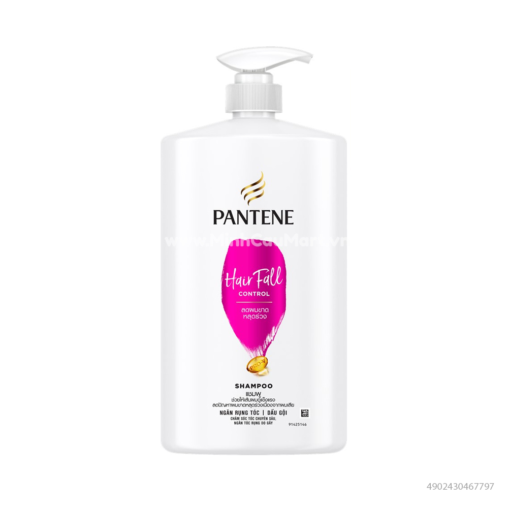

Nằm trên một doi đất nhỏ ở phía Bắc bờ biển Pattaya, tòa lâu đà Prasat sajjatham, tạm dịch làn "Ngôi đền chân lý" (The Sanctuary of Truth) không những là một phiên bản hoàn hảo của nghệ thuật kiến trúc cổ mà còn là một minh chứng cho sự sáng tạo của nền nghệ thuật hiện đại Thái Lan.
Lâu đài Sajjatham được khởi công vào ngày 13-08-1981, xuất phát từ ý tưởng
của một nhà tỉ phú
Thái Lan - ông Lek Viriyaphan, chủ nhân Công Ty Mô tô Thonburi và Công ty bảo hiển Viriyaphan
"Ngôi đền chân lý" có chiều cao 105m, chiều dài 100m, diện tích bên trong lâ
đài là 2,115m, còn diện tích toàn bộ khu vực là 12,8ha. Nó được phân thành 4 cánh
(chái) hướng ra 4 phía, mỗi cánh dược thiết kế theo một kiểu kiến trúc khác nhau
hoành tráng cua Angkor Wat, trong khi một cánh khác dược thiết kế theo "mô típ" Trung Hoa
không thể so sánh với Bắc kinh, Tây An về chiều sâu văn hóa hay bề dày lịch sử, THượng Hải hấp dẫn khách du lịch về một khía cạnh khác:điểm nóng nhất của Trung Hoa hiện đại
Bến Thượng Hải
Là sự kết hợp một cách kỳ lạ giữa Liverpool và Mahattan những năm 1920.
con phố ấn tượng nhất ở Thượng Hải là Trung Sơn Lộ,
người phương tây quen gọi là Bund
nhất của Thượng Hải là khu to giới bị tranh chấp dữ dội nhất của ba nước.
Anh, Nhật, Mỹ.
Bài.10
| Công nghệ dầu gội nuôi dưỡng tóc mới
|
 | |||||||
|---|---|---|---|---|---|---|---|---|
| Tỏa sáng cùng PANTENE | ||||||||
Đối tượng tham gia
|
|
|||||||